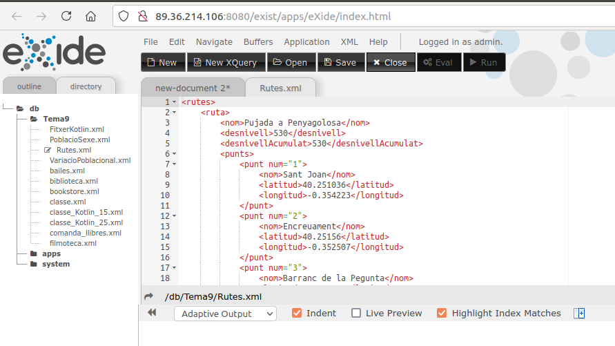

5 - Instal·lació de BD-XML Natives
Triarem el Sistema Gestor de Bases de Dades XML Natives eXist-db. Com veurem és molt potent i còmode d'utilitzar. A més és Open-Source. Està escrit completament en Java i suporta els estàndards de consulta XPATH, XQuery i XSLT.
Això sí, és un servidor, per tant l'haurem d'instal·lar, posar-lo en marxa quan l'utilitzem, i fer un poc d'administradors.
Afortunadament està construït en Java, i per tant no hem de tenir cap problema per a instal·lar-lo. Ens el podem baixar sense dificultat de la pàgina oficial: exist-db.org
El següent vídeo mostra tot el procés d'instal·lació i arrancada inicial. És per a la versió 5.2.0 que és l'estable en el moment de fer aquestos apunts, només us heu de preocupar de baixar-vos el fitxer d'instal·lació .jar per a fer-la totsigual, siga quin siga el S.O.
Els documents es guarden en col·leccions, les quals es poden crear unes dins d'unes altres.
Anem a veure uns exemples d'utilització. Crearem una col·lecció, i en ella inclourem algun document XML. Posteriorment farem alguna consulta senzilla, a veure com es comporta. Per a poder començar a utilitzar-lo és suficient amb obrir localhost:8080 des de qualsevol navegador
Recordeu que els resultats per defecte es veuen de 10 en 10, és a dir, que poden haver més resultats dels mostrats en principi.
Nota important
Si teniu problemes amb la instal·lació de eXist-db, podeu utilitzar el servidor de dades de l'Institut, on el tenim instal·lat també.
Només us haureu de connectar a aquesta adreça:
Podreu utilitzar-lo sense problemes i fer totes les consultes necessàries. No podreu, però, pujar documents, ja que faltaria la contrasenya. Però no us farà falta, estan ja pujats els documents necessaris.

Llicenciat sota la Llicència Creative Commons Reconeixement NoComercial CompartirIgual 2.5